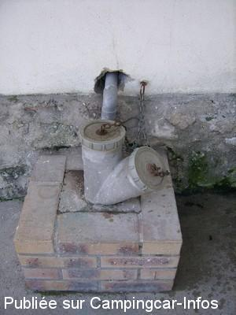
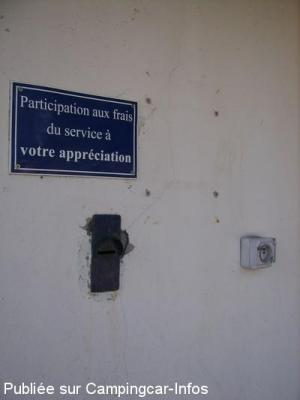
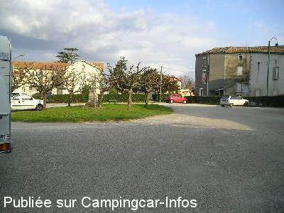

ASN = Aire de services avec stationnement nuit possible de :
CANCON
(N° 355)
Accès/adresse :
Rue des Ecoles / Place Palisse / Place du Foirail
47290 CANCON
47290 CANCON
Latitude : (Nord) 44.5365° Décimaux ou 44° 32′ 11′′
Longitude : (Est) 0.62563° Décimaux ou 0° 37′ 32′′
Tarif : Don : tirelire à disposition
Type de borne : Autre
Services :


Tous commerces à proximité
Autres informations :
Ouverte toute l'année, sauf période gel
15 emplacements stabilisés en pente.
Stationnement limité 48 heures,
Tel :+33(0)553 016 024
Office du Tourisme : + 33(0)553 010 989
Voir maisons à colombages et monter au site panoramique du château.

Le 14/07/2010 par voyageur 65

Le 14/07/2010 par voyageur 65

Le 25/03/2007 par louisette
de
patmau33
le 14/07/2015 :
Passage fin mai 2015, aire agréable et calme, en centre-ville
Passage fin mai 2015, aire agréable et calme, en centre-ville
de
R.TV46
le 11/05/2015 :
vraiement rien a dire,que du bonheur,mais surtout n'oublier pas votre contribution,certain on la memoire courte.........
vraiement rien a dire,que du bonheur,mais surtout n'oublier pas votre contribution,certain on la memoire courte.........
de
kezako 53
le 29/09/2014 :
je confirme, cette aire à le mérite d'exister.Mais je ne comprendrais jamais les camping caristes qui ne mettent pas un centime alors qu'ils font leur plein d'eau et qui prennent l'électricité toute la nuit (branché sur mon enrouleur)
je confirme, cette aire à le mérite d'exister.Mais je ne comprendrais jamais les camping caristes qui ne mettent pas un centime alors qu'ils font leur plein d'eau et qui prennent l'électricité toute la nuit (branché sur mon enrouleur)
de
Calaisien
le 17/05/2014 :
Un grand merci à la municipalité pour cette aire.
De nombreux commerces et restos sympa. Marché le lundi matin.
Un grand merci à la municipalité pour cette aire.
De nombreux commerces et restos sympa. Marché le lundi matin.
de
jym17
le 18/03/2014 :
nous venons d'y séjourner deux jours, Juste quelques précisions. Il est possible de stationner sur le parking sous les arbres où il n'y à pas de problème de pente.Le tuyau "sur la photo" n'existe plus , . Départ de randonnées pédestres
Commerces des spécialités du pays, les noisettes et les pruneaux
merci à la municipalité pour cette aire .
nous venons d'y séjourner deux jours, Juste quelques précisions. Il est possible de stationner sur le parking sous les arbres où il n'y à pas de problème de pente.Le tuyau "sur la photo" n'existe plus , . Départ de randonnées pédestres
Commerces des spécialités du pays, les noisettes et les pruneaux
merci à la municipalité pour cette aire .
de
Ocral Jack
le 31/10/2011 :
30/10/2011
Je m'y suis arrêté pour faire la vidange, j'ai trouvé une aire un peu vétuste,avec un seul robinet d'eau, pas de poubelles... Mais elle a le mérite d'exister et d'être gratuite...
Pour stationner il m'a semble d'effectivement c'est en forte pente.
30/10/2011
Je m'y suis arrêté pour faire la vidange, j'ai trouvé une aire un peu vétuste,avec un seul robinet d'eau, pas de poubelles... Mais elle a le mérite d'exister et d'être gratuite...
Pour stationner il m'a semble d'effectivement c'est en forte pente.
de
CHL
le 03/08/2011 :
Aire agréable pour passer une nuit. Le parking à côté de l'aire est moins en pente.
Aire agréable pour passer une nuit. Le parking à côté de l'aire est moins en pente.
de
loulou38
le 09/12/2010 :
Nous sommes venus plusieurs fois à Cancon et nous apprécions toujours avec autant de plaisir l'accueil de la municipalité ainsi que des habitants. Nous nous sommes même fait des amis. Le marché a lieu le lundi matin avec de trés bons produits. C'est là que nous faisons nos achats de foie gras. miam!miam!
Nous sommes venus plusieurs fois à Cancon et nous apprécions toujours avec autant de plaisir l'accueil de la municipalité ainsi que des habitants. Nous nous sommes même fait des amis. Le marché a lieu le lundi matin avec de trés bons produits. C'est là que nous faisons nos achats de foie gras. miam!miam!
de
Philippe BOYER
le 06/10/2010 :
Propre, fonctionnelle et assez calme. Manquerait peut-être quelques prises électriques, mais pour le prix ... Bravo à l'équipe municipale.
Propre, fonctionnelle et assez calme. Manquerait peut-être quelques prises électriques, mais pour le prix ... Bravo à l'équipe municipale.
de
Dangel
le 19/06/2010 :
Services et stationnement gratuits. Calme la nuit, mais dès 7h30, un peu moins. Le parking sera ombragé dès que les platanes auront un peu plus poussé. Quoiqu'il en soit, allez faire un tour côté vieille ville et en haut sur les ruines du château, vous verrez un magnifique panorama.
Services et stationnement gratuits. Calme la nuit, mais dès 7h30, un peu moins. Le parking sera ombragé dès que les platanes auront un peu plus poussé. Quoiqu'il en soit, allez faire un tour côté vieille ville et en haut sur les ruines du château, vous verrez un magnifique panorama.
de
Gus
le 04/01/2009 :
Une halte agréable, services trés accessibles, proche boulangerie mais un peu de bruit la nuit ... mais un village c'est vivant ... on peut pas tout avoir.
Merci à la municipalité pour ce grand espace en service même en hiver.
J'oubliais ... penser à verser votre participation pour les services.
Une halte agréable, services trés accessibles, proche boulangerie mais un peu de bruit la nuit ... mais un village c'est vivant ... on peut pas tout avoir.
Merci à la municipalité pour ce grand espace en service même en hiver.
J'oubliais ... penser à verser votre participation pour les services.
de
wilson 33
le 22/08/2008 :
Aire sympathique, artisanale mais fonctionnelle. nous avons eu la chance d'être au calme pour une nuit. sympa pour une halte.
Merci aux petites communes de nous offrir ce type d'aires. On se sent bienvenus, ce qui n'est pas partout le cas.
Aire sympathique, artisanale mais fonctionnelle. nous avons eu la chance d'être au calme pour une nuit. sympa pour une halte.
Merci aux petites communes de nous offrir ce type d'aires. On se sent bienvenus, ce qui n'est pas partout le cas.
de
louisette
le 24/03/2007 :
Nous avons passé une nuit sur cette aire , services, électricité gratuits. Une tirelire est disponible pour faire un don.
Question services et propreté rien à dire, mais côté calme il n'en a pas été de même.
Nous avons passé une nuit sur cette aire , services, électricité gratuits. Une tirelire est disponible pour faire un don.
Question services et propreté rien à dire, mais côté calme il n'en a pas été de même.